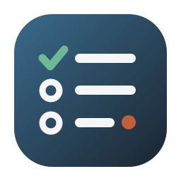

① 纯对勾
最简洁：方圆底 + 一个大竹青对勾，勾尾一点朱。极致干净，任何尺寸都清晰，气质最"无为"。
托盘 16px
② 勾选框
经典 checkbox：圆角方框内竹青对勾，右上一点朱徽点。一眼是"待办勾选"，现代 App 感。
托盘 16px
③ 清单三条
三行清单：首行竹青勾+文字条，下两行待办圈，末条一点朱。信息量足，直白像"清单"。

托盘 16px
④ 剪贴板
剪贴板+纸面清单，具象、一眼看懂是待办；夹头一点朱。细节多，小尺寸略复杂。
 任务清单托盘 16px
任务清单托盘 16px